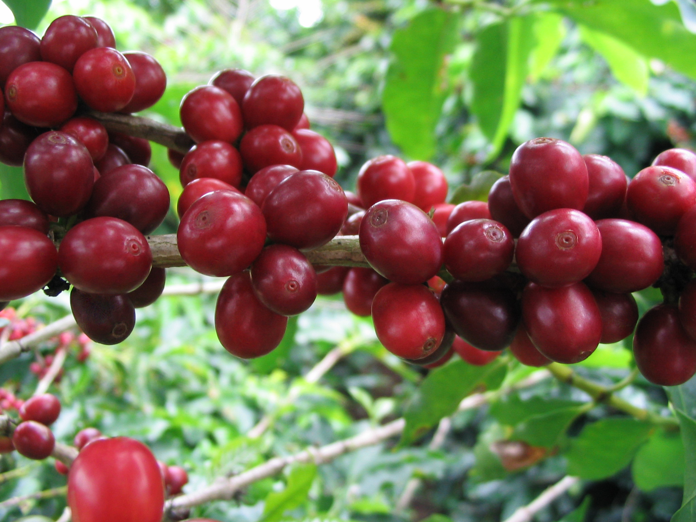

커피는 많은 사회에서 중요한 역할을 해 왔다. 커피의 기운을 북돋우는 효과는 에티오피아 동북부 지방에서 발견된 것으로 생각되며, 커피의 재배는 아랍으로 처음 전파되었다.[4] 커피의 음용에 대한 최초의 믿을 수 있는 증거는 15세기 중반, 남부 아라비아의 예멘의 수피즘 사원에서 발견되었다. [4] 커피는 무슬림 세계로부터 인도, 이탈리아, 그리고 나머지 유럽으로, 인도네시아, 미주 대륙으로 전파되었다. [5][6] 남 아프리카와 예멘에서, 커피는 종교의식에 사용되었고, 그 결과, 에티오피아 정교회에서는 세속적인 소비를 금지하였고, 금지령은 에티오피아 메네릭 2세 때까지 유지되었다.[7] 커피는 오토만 제국 터키에서 17세기에 정치적인 이유로 금지되었고,[8 유럽에서는 반체제적 정지 활동과 연관되어 있었다.
